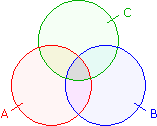

Mengenlehre - Aufgaben 2
1.
Wahr oder falsch?
a) ⊆ b) ∅ ⊆ c) ⊆ d) * ⊆ e) ⊆ f) ⊆ g) * ⊆
2.
A = { x
 | x≤2 }, B = { x * | x≤3 }, C = { x | –2<x<2 }
| x≤2 }, B = { x * | x≤3 }, C = { x | –2<x<2 }a) (A ∩ B) ∪ C = b) (A ∪ C) ∩ B = c) (B ∪ C)\A = d) (A ∩ B)\(B ∩ C) =
3.
A = { x
| 1≤x≤4 }, B = { x | 3<x<7 }, C = { x | 2<x≤5 }a) (A ∪ B)\C = b) A ∩ (B\C) = c) Bx(A ∩ C) = d) (A\C)x(B ∩ C) =
4.
 Beweise über das nebenstehende Venn-Diagramm:
a) A ∩ (B ∩ C) = (A ∩ B) ∩ C
b) A ∩ (B ∪ C) = (A ∩ B) ∪ (A ∩ C)
c) A\(B ∩ C) = (A\B) ∪ (A\C)
5. Vereinfache über die Operatoreigenschaften, ohne Schritte zu überspringen:
a) (A ∩ B) ∪ B =
b) [(∅ ∩ B) ∪ (A ∪ B)] ∩ (A ∪ B) =
c) [(A ∩ B) ∪ (A ∩ B)] ∪ (A ∩ B) =
d) ∅ ∩ A ∪ (A ∩ B) =
e) A ∪ [(A ∩ B) ∩ (A ∪ B)] =
f) (A ∩ B) ∩ [(A ∪ B) ∩ (A ∪ B)] =
g) [(A ∩ B) ∪ B] ∩ A =
h) [B ∩ (A ∪ B)] ∪ [B ∩ (A ∩ B)]
i) [G ∪ A ∩ (A ∪ B)] ∩ (A ∪ B) =
j) [A ∩ (G ∩ B)] ∪ (A ∩ B) =
6.
Von 36 Schülern einer Klasse haben 21 braune Haare und 13 braune Augen, bei 10 Schülern ist weder die Haar- noch die Augenfarbe braun. Bei wie viel Schüler ist die Haar- und Augenfarbe braun?
7.
24 Triathleten haben übers Wochenende trainiert. 11 sind gelaufen, 18 geschwommen, 9 gelaufen und geschwommen, 7 gelaufen und Rad gefahren, 11 geschwommen und Rad gefahren, 6 haben alle drei Disziplinen trainiert. Wie viele sind Rad gefahren?
Ergebnisse:
1. a) w b) w c) f d) w e) w f) w g) f 2. a) {–1, 0, 1, 2} b) {1, 2} c) {–1, 3}
d) {2} 3. a) {1, 2, 6} b) ∅ c) {(4,3), (4,4), (5,3), (5,4), (6,3), (6,4)}
d) {(1,4), (1,5), (2,4), (2,5)} 5. a) A ∪ B b) B c) A ∪ B d) G e) A f) A ∩ B
g) A ∩ B h)(A ∩ B) ∪ (A ∩ B) i) ∅ j) B 6. 8 7. 16